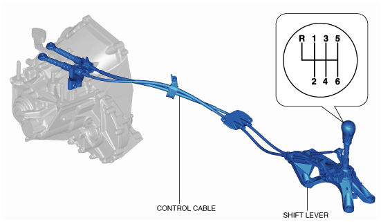
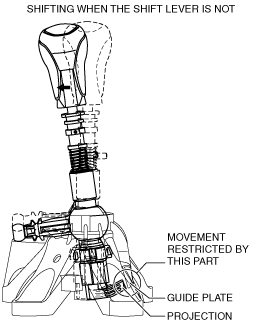

• The shift lever transmits the driver’s intention to the manual transaxle via the control cable.
Construction

am2zzn00002554
Shift lever
• The shift lever has an integrated guide plate to prevent improper shifting to 1st gear and reverse.
Operation
1GR shifting
• The guide plate located on the shift lever prevents improper shifting to the reverse gear while shifting to 1st gear by restricting the movement of the shift lever.

am2zzn00002555
Reverse shifting
• When shifting into reverse, once the shift lever is pressed down and moved towards the reverse position.